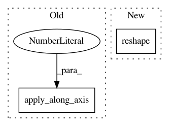

a49923f5f7072986555584884a4fe995b0e52344,scanpy/preprocessing/_qc.py,,top_segment_proportions_sparse_csr,#Any#Any#Any#,234
Before Change
elif (end - start) > maxidx:
partitioned[i, :] = - \
(np.partition(-data[start:end], maxidx))[:maxidx]
partitioned = np.apply_along_axis(
np.partition, 1, partitioned, maxidx - ns)[:, ::-1][:, :ns[-1]]
acc = np.zeros((indptr.size-1), dtype=data.dtype)
prev = 0
for j, n in enumerate(ns):
After Change
acc += partitioned[:, prev:n].sum(axis=1)
values[:, j] = acc
prev = n
return values / sums.reshape((indptr.size - 1, 1))
In pattern: SUPERPATTERN
Frequency: 3
Non-data size: 2
Instances
Project Name: theislab/scanpy
Commit Name: a49923f5f7072986555584884a4fe995b0e52344
Time: 2019-02-17
Author: ivirshup@gmail.com
File Name: scanpy/preprocessing/_qc.py
Class Name:
Method Name: top_segment_proportions_sparse_csr
Project Name: EpistasisLab/tpot
Commit Name: 8bd29158f50286a0896a8d239056da0676024551
Time: 2017-05-22
Author: weixuanf@mail.med.upenn.edu
File Name: tpot/built_in_operators.py
Class Name: ZeroCount
Method Name: transform
Project Name: Esri/raster-functions
Commit Name: b39ae1072934ad146759cd1941931433908ed0d7
Time: 2015-02-07
Author: jwasilkowski@esri.com
File Name: functions/LinearSpectralUnmixing.py
Class Name: LinearSpectralUnmixing
Method Name: updatePixels